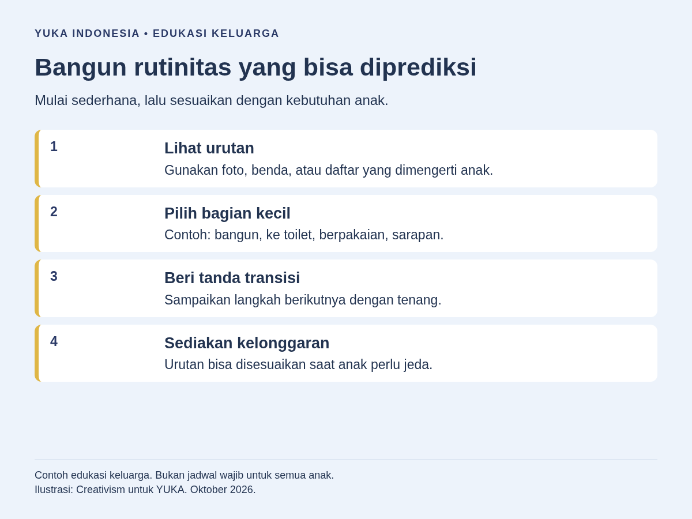
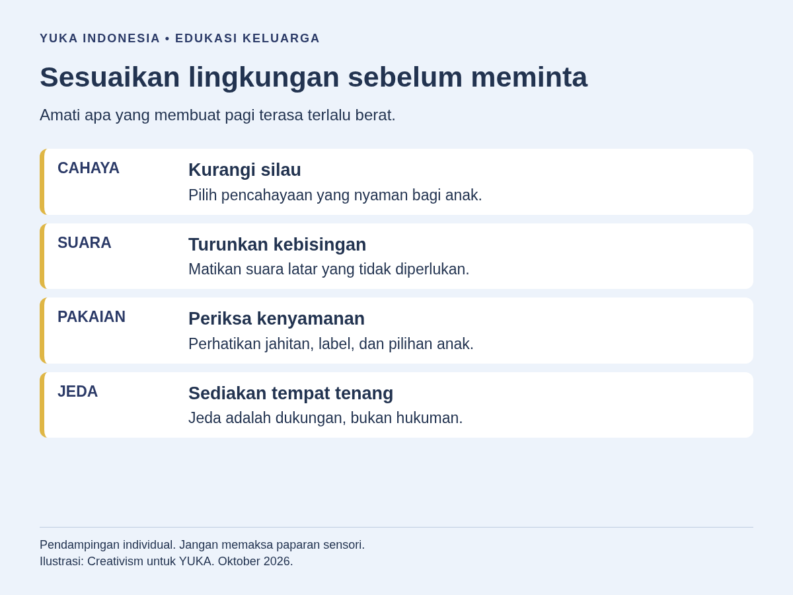
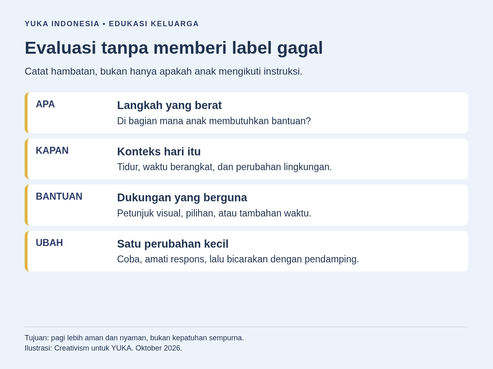

Cara membuat rutinitas pagi anak autis adalah mengamati kebutuhan anak, memilih urutan kegiatan yang realistis, menyediakan petunjuk yang dipahami, dan menyiapkan pilihan saat rencana berubah. Mulailah dari bagian pagi yang paling sulit, bukan langsung mengatur seluruh hari. Jadwal visual dapat membantu, tetapi anak tetap perlu waktu, kesempatan meminta bantuan, dan penyesuaian terhadap suara, cahaya, pakaian, atau makanan yang terasa tidak nyaman.
Panduan ini berfokus pada persiapan berangkat sekolah yang lebih mudah dipahami, bukan latihan agar anak selalu patuh. Untuk memahami keragaman kebutuhan dukungan, baca pengantar pengertian autisme dan karakteristiknya. Contoh berikut merupakan rancangan pendidikan keluarga yang boleh diubah, bukan resep terapi atau patokan perkembangan semua anak.
Mengapa pagi terasa berat bagi anak autis?
Pagi menggabungkan banyak perpindahan dalam waktu terbatas: meninggalkan tempat tidur, masuk kamar mandi, berganti pakaian, makan, lalu keluar rumah. Kesulitan bisa muncul karena urutan belum jelas, kegiatan belum dikuasai, perubahan tidak terduga, atau lingkungan terasa terlalu kuat. Tidak semua anak mengalami hambatan yang sama.
Kalimat “cepat siap-siap” juga menyembunyikan banyak tugas. Anak mungkin tahu letak tas, tetapi belum tahu barang yang harus dimasukkan. Ia mungkin mampu memakai baju, tetapi kesulitan menghadapi kain yang menggesek kulit. Karena itu, bedakan masalah memahami instruksi, keterampilan, kenyamanan, dan kondisi tubuh sebelum memilih bantuan.
Jangan menafsirkan setiap penolakan sebagai sikap membangkang. Kurang tidur, lapar, sakit, atau kekhawatiran tentang sekolah juga perlu diperhatikan. Prinsip dalam pendampingan anak autis dengan kasih sayang dapat menjadi pengingat: orang dewasa membantu membaca kebutuhan, bukan sekadar menambah perintah.
Bagaimana memetakan pagi sebelum membuat jadwal?
Amati beberapa pagi yang biasa terjadi dan tulis titik hambatannya. Catatan singkat lebih berguna daripada jadwal ideal yang belum pernah dicoba. Libatkan anak melalui percakapan, pilihan gambar, menunjuk benda, atau cara komunikasi yang sudah ia gunakan. Tidak berbicara bukan berarti tidak memiliki pilihan.
- Tentukan tujuan bersama. Misalnya, anak mengetahui kegiatan berikutnya dan dapat meminta bantuan sebelum berangkat.
- Catat urutan nyata. Tulis aktivitas yang terjadi, termasuk menunggu kamar mandi atau mencari sepatu.
- Temukan satu hambatan utama. Apakah anak berhenti ketika mendengar keran, memilih baju, atau meninggalkan permainan?
- Bedakan bantuan anak dan tugas orang dewasa. Mengisi formulir sekolah serta mencari kunci kendaraan bukan tanggung jawab anak.
- Pilih satu perubahan awal. Contohnya, menyiapkan pakaian yang nyaman sebelum tidur, kemudian melihat responsnya.
Gunakan bahasa pengamatan: “menutup telinga saat keran dibuka”, bukan “selalu drama saat mandi”. Sertakan hal yang membantu, seperti kamar mandi lebih tenang atau instruksi satu langkah. Catatan tidak perlu foto wajah, rekaman saat anak tertekan, ataupun informasi pribadi yang dibagikan ke grup.
Perkirakan waktu dari pengalaman keluarga, termasuk waktu tunggu dan jeda. Jangan memajukan bangun tidur dengan mengorbankan tidur yang dibutuhkan anak. Jika jadwal selalu terlalu padat, kurangi pekerjaan pagi orang dewasa atau bicarakan kendala kedatangan dengan sekolah.

Cara menyusun jadwal visual tanpa memaksa anak
Jadwal visual adalah petunjuk tentang apa yang sedang dan akan terjadi, bukan papan tuntutan. Pilih bentuk yang bermakna bagi anak: benda nyata, foto barang, gambar sederhana, tulisan, atau kombinasi. Anak yang membaca boleh memilih daftar tulisan; gambar bukan kewajiban untuk semua anak autis.
National Autistic Society menjelaskan dukungan untuk mengatur kegiatan melalui gambar, daftar tertulis, dan benda nyata. Organisasi ini juga mengingatkan bahwa sebagian orang tetap membutuhkan bantuan. Karena itu, menggunakan jadwal secara mandiri tidak perlu dijadikan syarat keberhasilan.
Untuk percobaan awal, tampilkan dua kegiatan, misalnya “sekarang berpakaian, berikutnya sarapan”. Jika anak memahami urutan, tambahkan kegiatan yang relevan. Angka ini hanya contoh penyederhanaan, bukan jumlah kartu yang diwajibkan. Letakkan petunjuk di tempat kegiatan berlangsung atau gunakan papan kecil yang mudah dibawa.
Peragakan cara melihat langkah dan menandai selesai. Anak boleh membalik kartu, mencentang tulisan, menunjuk, atau meminta orang dewasa memindahkannya. Tidak perlu mengarahkan tangannya secara paksa. Beri waktu memproses sebelum mengulang ucapan. Panduan membuat jadwal visual untuk anak autis dapat membantu memilih bentuk petunjuk.
Sediakan juga tanda “bantu”, “jeda”, dan “tidak nyaman”. Gunakan simbol yang sudah dipahami, bukan sistem komunikasi baru yang harus dikuasai pagi itu. Pelajari dukungan komunikasi augmentatif di rumah bila anak memerlukan cara menyampaikan kebutuhan selain berbicara. Permintaan jeda harus ditanggapi, bukan sekadar dicatat.
Apa yang perlu disiapkan sejak malam?
Pindahkan keputusan yang tidak mendesak ke malam sebelumnya, sejauh keluarga mampu. Siapkan tas, informasi sekolah, botol minum, serta pakaian di lokasi tetap. Tujuannya mengurangi kegiatan mencari barang, bukan menambah pekerjaan anak menjelang tidur.
Ajak anak memilih dari dua pakaian yang sama-sama sesuai dan nyaman. Pastikan pilihan benar-benar tersedia, bukan pertanyaan yang akhirnya dibatalkan orang dewasa. Jika seragam terasa mengganggu, bicarakan penyesuaian dengan sekolah. Jangan langsung menyimpulkan anak harus terbiasa tanpa memeriksa jahitan, ukuran, atau bahan.
Tunjukkan rencana esok secara singkat: siapa yang mengantar dan ke mana akan pergi. Beri tahu perubahan yang sudah diketahui, termasuk kegiatan sekolah yang berbeda. Simpan pengingat untuk orang dewasa secara terpisah agar papan anak tidak penuh urusan administrasi.
Persiapan malam tidak harus sempurna. Untuk keluarga dengan waktu terbatas, satu tempat tetap bagi tas dan sepatu bisa menjadi langkah pertama. Pilih perubahan yang bisa dipertahankan tanpa mengorbankan waktu istirahat keluarga.
Bagaimana mengurangi beban sensorik saat pagi?
Sesuaikan lingkungan berdasarkan respons anak, bukan daftar aktivitas sensorik yang dianggap cocok untuk semua. Periksa cahaya kamar mandi, bunyi alarm, aroma produk, suhu air, dan tekstur pakaian. Tawarkan perubahan sederhana, kemudian tanyakan atau amati apakah anak lebih nyaman. Musik lembut pun bisa mengganggu sebagian anak.
Menurut panduan pemrosesan sensorik National Autistic Society, kebutuhan sensorik dapat berbeda dan catatan pengalaman membantu mengenali pola. Saat kewalahan, mengurangi pemicu, membatasi ucapan, serta memberi waktu pemulihan merupakan bentuk dukungan. Panduan tersebut tidak berarti semua penolakan memiliki penyebab sensorik.
- Saat bangun: gunakan pencahayaan yang diterima anak dan beri tahu sebelum menyalakan alat bersuara.
- Saat berpakaian: periksa label, lipatan, dan jahitan; tawarkan bantuan hanya jika dibutuhkan dan diterima.
- Saat sarapan: sediakan makanan yang dikenali sesuai kebutuhan makan anak, tanpa menjadikan makanan sebagai hadiah kepatuhan.
- Saat membersihkan diri: jelaskan langkah berikutnya dan periksa apakah ada nyeri atau ketidaknyamanan.
Artikel respons sensorik yang berlebihan pada anak dapat menjadi bacaan awal, bukan alat diagnosis. Untuk sarapan, lihat pembahasan mendampingi anak autis yang selektif terhadap makanan. Jangan memaksakan makanan baru ketika keluarga sedang terburu-buru.
Kesulitan menyikat gigi yang disertai nyeri perlu dibicarakan dengan dokter gigi. Gunakan panduan persiapan kunjungan anak autis ke dokter gigi untuk merencanakan dukungan. Jangan mencoba tekanan tubuh, alat berbobot, atau program sensorik sebagai resep pagi tanpa asesmen dan arahan profesional yang sesuai.

Contoh rutinitas pagi anak autis yang bisa disesuaikan
Contoh berikut membagi pagi menjadi beberapa bagian, bukan jadwal menit demi menit. Urutan mandi, berpakaian, dan sarapan boleh mengikuti kebutuhan keluarga serta kenyamanan anak. Pilih langkah yang memang diperlukan; jangan menambahkan kegiatan hanya agar papan terlihat lengkap.
- Bangun dan mengenali rencana. Orang dewasa menyampaikan siapa yang mendampingi serta menunjukkan kegiatan pertama.
- Toilet dan kebersihan diri. Tampilkan satu langkah yang sedang dikerjakan. Bantuan diberikan sesuai kebutuhan, dengan menjaga privasi.
- Berpakaian. Gunakan pakaian yang sudah dipilih. Jika satu bagian sulit, misalnya kancing, bantu bagian itu saja.
- Sarapan. Anak mendapat kesempatan makan dan minum tanpa interogasi tentang seberapa cepat ia menghabiskannya.
- Memeriksa barang. Anak dapat menunjuk tas atau botol, sementara orang dewasa memastikan perlengkapan penting tersedia.
- Beralih ke perjalanan. Beri petunjuk keberangkatan dan kesempatan menyampaikan kebutuhan sebelum keluar rumah.
Bayangkan situasi ilustratif: seorang anak nyaman memakai baju, tetapi berhenti ketika harus meninggalkan meja makan. Keluarga tidak perlu menambah pengingat pada seluruh kegiatan. Mereka bisa menunjukkan “sarapan selesai, berikutnya sepatu”, menyediakan tempat piring, dan memberi waktu beralih. Jika masalahnya justru masih lapar, petunjuk visual saja tidak menyelesaikannya.
Untuk anak yang belum memahami seluruh rangkaian, simpan urutan lengkap sebagai panduan orang dewasa. Anak cukup melihat langkah sekarang dan berikutnya. Untuk anak yang memilih daftar tulisan, gunakan ceklis ringkas. Tidak ada kewajiban naik tingkat dari benda ke gambar lalu tulisan; alat yang tetap membantu boleh terus digunakan.
Apa yang dilakukan jika rencana berubah atau anak kewalahan?
Siapkan versi pagi biasa dan versi pagi dengan penyesuaian. Versi kedua bukan hukuman atau jalan pintas untuk mengabaikan kebutuhan dasar. Ia menjelaskan kegiatan yang berubah ketika anak kurang sehat, transportasi terlambat, hujan, atau keluarga perlu bantuan tambahan.
Jika pengantar berganti, jelaskan apa yang berubah dan apa yang tetap sama. Misalnya, “Hari ini berangkat bersama Ayah. Tas dan tujuan sekolah tetap sama.” Ubah petunjuk yang relevan, jangan membiarkan gambar lama bertentangan dengan kenyataan. Hindari menjanjikan waktu pasti ketika perjalanan belum dapat diperkirakan.
NHS dalam panduan mendukung anak autis menyarankan pemberitahuan perubahan sedini mungkin, lingkungan yang nyaman, serta ruang untuk beristirahat. Perubahan kecil dapat diperkenalkan perlahan dalam situasi aman. Ini berbeda dari sengaja mengejutkan anak agar ia terbiasa menghadapi tekanan.
Saat anak kewalahan, hentikan tuntutan tambahan, kurangi suara, dan jaga lingkungan tetap aman. Jangan memaksa kontak mata, menyentuh tanpa memperhatikan responsnya, atau menghentikan gerakan menenangkan diri yang tidak membahayakan. Pembahasan mendampingi anak autis saat sangat tertekan perlu dibaca dengan perhatian pada konteks, bukan untuk menyamakan semua tangisan dengan tantrum.
Setelah anak pulih, tinjau pemicu bersama tanpa meminta penjelasan panjang saat ia masih kelelahan. Bila keselamatan terancam atau ada tanda sakit yang mengkhawatirkan, cari bantuan tenaga kesehatan. Jadwal tidak menggantikan pemeriksaan kesehatan.
Bagaimana menyamakan dukungan rumah dan sekolah?
Bagikan informasi fungsional kepada guru: petunjuk yang dipahami, cara meminta jeda, dan bantuan yang diterima anak. Tidak perlu mengirim seluruh catatan keluarga. Pastikan anak dilibatkan sesuai kemampuannya serta informasi sensitif hanya dibagikan kepada pihak yang memang membutuhkan.
Sepakati penyambutan yang jelas saat tiba. Misalnya, anak melihat tempat menyimpan tas dan mengetahui kegiatan pertama. Jika perjalanan melelahkan, diskusikan kemungkinan jeda di area yang lebih tenang. Hindari mengukur keberhasilan hanya dari anak langsung mengikuti kelas tanpa menyampaikan keluhan.
Orang tua dan guru dapat merujuk strategi mendukung pembelajaran anak autis di kelas untuk menyelaraskan bahasa petunjuk. Bentuk papan tidak harus sama persis, tetapi makna simbol penting sebaiknya tidak membingungkan. Catat pula siapa yang membantu bila pengantar atau guru utama tidak hadir.
Bagaimana mengevaluasi rutinitas tanpa mengejar kepatuhan?
Nilai apakah pagi menjadi lebih mudah dipahami dan kebutuhan anak lebih cepat dikenali. Anak yang dapat meminta bantuan atau menolak pakaian yang menyakitkan sedang menyampaikan informasi penting. Itu bukan kegagalan hanya karena kegiatan belum selesai sesuai rencana orang dewasa.
Gunakan catatan sederhana: bagian yang sulit, dukungan yang dicoba, respons anak, serta hal yang ingin diubah. Tulis “memilih baju lain lalu bersedia berpakaian”, bukan sekadar “berhasil”. Jika anak tampak diam tetapi sangat tegang, jangan otomatis menyebut strategi efektif.
Tinjau saat keluarga tidak terburu-buru. Pertahankan perubahan yang membantu dan hentikan yang meningkatkan tekanan. Ubah satu unsur terlebih dahulu agar penyebabnya lebih mudah terlihat. Tidak ada batas beberapa hari atau minggu yang menjamin rutinitas pasti terbentuk.

Untuk arah belajar selanjutnya, baca mengajarkan kemandirian kepada anak berkebutuhan khusus. Kemandirian dapat berupa memilih, meminta dukungan, dan berpartisipasi dengan alat bantu, bukan selalu melakukan semuanya sendiri.
Mulailah besok dengan satu hambatan yang bisa diubah bersama anak. Rutinitas pagi yang berguna bukan yang paling rapi, melainkan yang menjaga kenyamanan, komunikasi, dan kesempatan belajar. Jika kesulitan menetap atau memburuk, bawa catatan tersebut kepada guru dan tenaga profesional yang sesuai.
Pertanyaan yang Sering Diajukan
Bagaimana cara mulai membuat rutinitas pagi anak autis?
Amati bagian pagi yang paling sulit, pilih satu tujuan, lalu sediakan petunjuk yang sudah dipahami anak. Mulailah dengan perubahan kecil, misalnya menyiapkan pakaian atau menunjukkan kegiatan berikutnya. Libatkan anak dalam memilih dukungan dan periksa apakah perubahan tersebut benar-benar membantu.
Apakah semua anak autis harus menggunakan gambar?
Tidak. Sebagian anak terbantu foto atau benda nyata, sementara yang lain memilih tulisan, pengingat suara, atau kombinasi. Pilih berdasarkan pemahaman dan preferensi anak, bukan diagnosis saja. Jadwal yang terlihat menarik belum tentu mudah digunakan oleh anak yang bersangkutan.
Berapa lama rutinitas pagi sebaiknya berlangsung?
Tidak ada durasi universal. Gunakan pengalaman keluarga untuk memperkirakan waktu kegiatan, bantuan, perjalanan, dan jeda. Hindari mengorbankan tidur demi menambah banyak tugas. Jika pagi selalu terasa sempit, sederhanakan persiapan dan diskusikan dukungan kedatangan dengan sekolah.
Apa yang harus dilakukan jika anak menolak jadwal?
Periksa apakah simbol dipahami, jumlah langkah terlalu banyak, atau ada kegiatan yang terasa sulit dan tidak nyaman. Kurangi informasi, tawarkan bantuan, serta tanggapi permintaan jeda. Jangan menggunakan jadwal untuk menahan makan, minum, toilet, atau perhatian sampai anak mengikuti perintah.
Kapan keluarga perlu meminta bantuan profesional?
Mintalah bantuan jika kesulitan tidur, makan, kebersihan diri, nyeri, atau tekanan emosional menetap dan mengganggu keseharian. Bawa catatan situasi serta dukungan yang sudah dicoba. Untuk ancaman keselamatan atau gejala sakit yang mengkhawatirkan, cari pertolongan segera; jangan hanya mengubah jadwal.
Bacaan Terkait
Status tinjauan medis: artikel ini disusun oleh tim pendidik, belum ditinjau oleh dokter berlisensi. Tinjauan oleh tenaga medis berkredensial sedang kami siapkan dan status ini akan diperbarui di halaman ini begitu selesai. Alur tinjauan dan koreksi dijelaskan di Kebijakan Editorial YUKA. Untuk keputusan diagnosis atau terapi, rujuklah pada dokter anak, psikiater anak, psikolog, atau terapis yang menangani anak.
Sumber dan Referensi
- Autism and sensory processing
- Organising and prioritising: a guide for all audiences
- Supporting an autistic child
Catatan: Artikel ini bersifat edukasi umum dan bukan pengganti konsultasi dengan psikolog, tenaga kesehatan, atau petugas layanan sosial resmi. Tiga halaman sumber khusus diperiksa HTTP 200 pada 9 Oktober 2026; tautan internal diverifikasi HTTP 200 dan terdapat di sitemap artikel live.